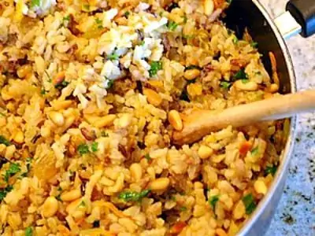

Confetti Rice

This Confetti Rice side dish has three different kinds of rice and some added goodies to make it colorful and delicious! I’ll just say this right up front. This recipe is kind of a commitment. You’ll dirty a few pans, but that all helps to result in the final, delicious rice dish. “Confetti” refers to the multitude of colors, textures and flavors in the dish. I don’t mind having a messy kitchen once in a while (since I enjoy cooking so much) if there is good food coming out in the end. Will you try it?
Ingredients needed:
- aisins
- white rice
- all purpose flour
- eggs
- brown rice
- wild rice
- chicken broth
- unsalted butter
- onion
- carrot
- pine nuts (can sub pecans or almonds)
- fresh parsley
How to make Confetti Rice:
- lace the raisins in a bowl and cover with hot water. Let the raisins soak until they are plump, then drain.
- Rinse the white, brown and wild rices separately and drain.
- Combine the wild rice and 1½ cups chicken broth in a saucepan and mix well. Cook, covered, for 35 to 40 minutes or until tender.
- Heat 3 tablespoons of butter in each of 2 separate saucepans until melted. Add 3 tablespoons chopped onion to each saucepan. Sauté until tender.
- Add the white rice and 1¼ cups chicken broth to 1 saucepan and mix well. Add the brown rice and 1½ cups chicken broth to the remaining saucepan and mix well. Bring both saucepans to a boil; reduce heat and simmer. Simmer the white rice, covered, for 20 minutes and the brown rice, covered, for 1 hour.
- Sauté the carrot in 3 tablespoons of butter in a skillet.
- Combine the cooked rices in a large bowl and mix well. Stir in the raisins, carrot, pine nuts and parsley. Spoon into a serving bowl.
Tap to go main manu